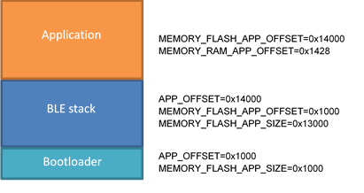

|
BLE Static Stack
|
|
BLE Static Stack
|
This document describes how to build a BLE demo application using the static BLE stack approach. It is possible to build a project containing the BlueNRG-1,2 stack library with all (or part) of its APIs and build a second project that does not contains the stack and nevertheless it can use it. In this way the second project, containing only the application, can be programmed into the device without reprogramming the BlueNRG-1,2 stack. This is valid as long as the Bluetooth stack does not have to be changed. The document content is valid for both BlueNRG-1 and BlueNRG-2 devices. Any reference to BlueNRG-1 device is also valid for the BlueNRG-2 device. Any specific difference is highlighted whenever it is needed.
Follow the list of key steps to be followed:
In the partitioning illustrated in Figure 1:Flash memory partitioning, the BLE stack is programmed in a section of the flash together with a simple reset manager. Normally this application only has the task to jump to the application code and call the service routines in the application’s interrupt vector table once an interrupt occurs (necessary because interrupt vector table remapping is not supported in Cortex-M0).
This simple reset manager may be replaced by a more complex application, e.g. a bootloader
| Figure 1: Flash memory partitioning |
The reset manager should not use any variable in RAM, hence the only RAM space used by the reset manager firmware is the one used by the BLE library. Part of the RAM can be reserved for special variables shared between simple and main application, e.g. to perform a software activation of a bootloader. Figure 2: RAM partitioning shows the RAM statically allocated by the stack (blue area). The BlueNRG stack also needs additional RAM that is provided by the application during stack initialization. This space is allocated by the application.

|
| Figure 2: RAM partitioning |
BLE_SensorDemo_with_Static_Stack is a demonstration application under Project\BLE_Examples directory. This application does not contain the Bluetooth library but uses the APIs provided by the library programmed inside the first area of the Flash.
In order to correctly configure a project to use the BLE static library, the symbols of the library must be taken into account by the linker during the linking process. All the pointers to the functions that are exported by the library are accessible through a table in Flash (command table) or directly, using a library containing absolute symbols (e.g. libbluenrg1_static_stack.a). The pointers to the callbacks for events generated by the library are instead stored in a table in RAM (event table), so that the application can write its own pointers into this table.
The libbluenrg1_static_stack.a file is generated by the BLE_Static_Stack project, so that this file can be used by application's project during linking phase to resolve all the required symbols. The bluenrg_stack_init_if.c file is used in order to automatically register all the application callbacks without taking care of explicitly register them when using the static stack library.
Two linker variables for the application's project need to be set to the proper values. MEMORY_FLASH_APP_OFFSET must be set to the start of the first available sector in Flash. MEMORY_RAM_APP_OFFSET must be set with an address that is equal to (or greater than) the offset of the first available RAM location. See BLE_SensorDemo_with_Static_Stack project to know which RAM offset must be used by your application when using the Static Stack included insided the BlueNRG-1 DK. When using a customized recompiled version of the static BLE library, the map file generated together with the BLE static stack library indicates which is the first RAM location that is available to the application. E.g.:
The BlueNRG-1/2 static stack is provided inside the BlueNRG1-2 DK in binary format (BLE_Static_Stack.hex and BLE_Static_Stack_OTA_BTL_ResetManager.hex), ready to be programmed into the device. Usually there is no need to build it again. If you do not want to modify it, you can skip this section.
BLE_Static_Stack project on Project\BLE_Examples folder can be used to build a firmware that contains only the Bluetooth stack library and a reset manager. The projects for IAR Embedded Workbench for ARM, KEIL MDK-ARM and Atollic TrueSTUDIO are provided. Compared to a normal application using BlueNRG stack library, this project contains three special C files:
After the firmware is built, an external program generates a library, libbluenrg1_static_stack.a, containing the symbol table of the stack's function addresses. The pointers to the callback functions has to be stored in an array allocated in RAM (ev_call_table), whose symbol is provided in libbluenrg1_static_stack.a. Using a library containing the addresses of all the symbols allows to directly call stack's functions without accessing them through the command table (faster access and less code).
Two macros need to be changed in case the linking process fails because space is not enough, or if the space reserved for the stack becomes lower: APP_OFFSET and MEMORY_FLASH_APP_SIZE.
The preprocessor macro APP_OFFSET must be set to the offset of the first flash address of the main application. MEMORY_FLASH_APP_SIZE linker variable is used to avoid that the flash occupancy becomes higher than expected. If set it to a given value, the linker returns error if the size of the flash needed by the application is higher than the specified value.
E.g. if after the building process the first available address in Flash (rounded to the beginning of the next sector) is 0x10053000, APP_OFFSET can be set to 0x14000 (0x10053000 - 0x10040000). MEMORY_FLASH_APP_SIZE must set to 0x14000 to be sure that the building process gives error if the size of the firmware exceeds this limit.
Install GNU ARM Embedded Toolchain and add the binary folder in the system PATH. The utility create_sym_lib.exe in BlueNRG-1 SDK Utility folder needs the following utilities:
Open the Windows Command Prompt and try to invoke those commands to check if they are correctly installed.

|
| Figure 3: Stack allocation in Flash with offset |
It is possible to upgrade only the application firmware over-the-air if the application has the support to the OTA Service Manager. It is also required that the Static Stack is built with a Reset Manager which is able to deal with a "dual firmware" approach. The application area is divided in two sections: the lower part and the higher part.
The example projects includes configurations to support firmware upgrade over-the-air. When using this configuration, the application must link a specific library (libbluenrgX_static_stack_with_resetmanager.a), which has been created including the OTA update reset manager.
The difference with respect to the basic configuration are:
 1.8.10
1.8.10